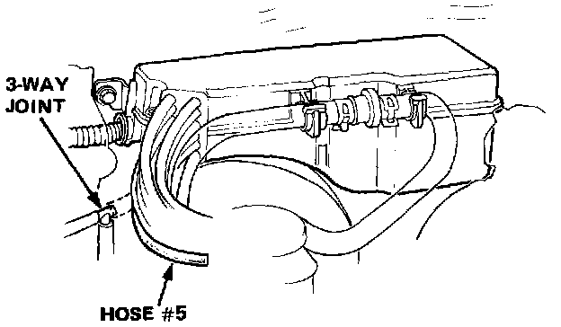
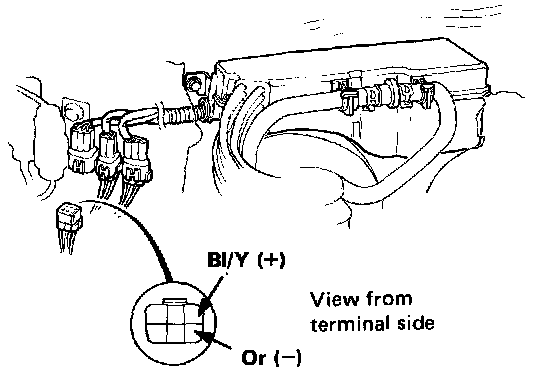
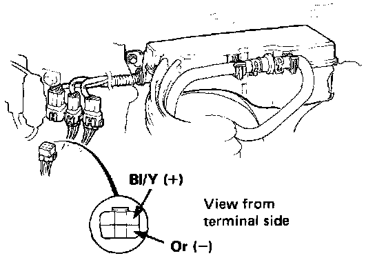

Ignition Control Solenoid Valve A (Sedan Only)
Solenoid Valve ATest I:
1. Start the engine and warm up to normal operating temperature (cooling fan comes on).

2. Disconnect the #5 vacuum hose from the 3-way joint and, while the engine idles, check the joint for vacuum. The joint should have vacuum.
- If there is no vacuum, check the vacuum line for proper connection, cracks, blockage or disconnected hose, and the vacuum port or check valve for clogged.
3. Disconnect the 6-P connector.

4. Connect the voltmeter positive probe to the Bl/Y terminal and negative to the Or terminal, then check voltage at idle.
- If there is battery voltage, check the vacuum line in the control box. If the line is OK, replace the solenoid valve and retest.
- If there is no voltage, check voltage between the Bl/Y terminal and body ground with the ignition switch ON.
- If there is no voltage, repair an open in the Bl/Y wire between the solenoid valve and No. 11 (10A) fuse in the dash fuse box.
- If there is voltage, check for open in the Or wire between the solenoid valve and ECU.
If the wire is OK, refer to Computers and Control Systems.
Test II:
1. Start the engine and warm up to normal operating temperature (cooling fan comes on).
2. Disconnect the 6-P connector.

3. Connect the voltmeter positive probe to the Bl/Y terminal and negative to the or terminal.
4. Rapidly open and release the throttle. The voltage should momentarily go to 0.
- If the voltage is not specified, see ECU troubleshooting.
- If the voltage is specified, replace the solenoid valve and retest.